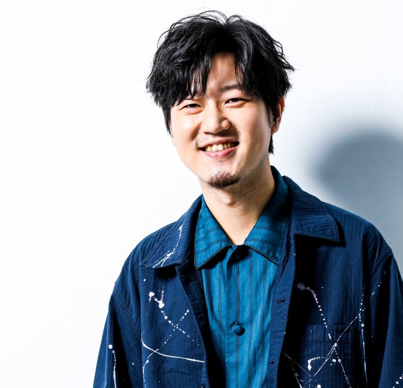
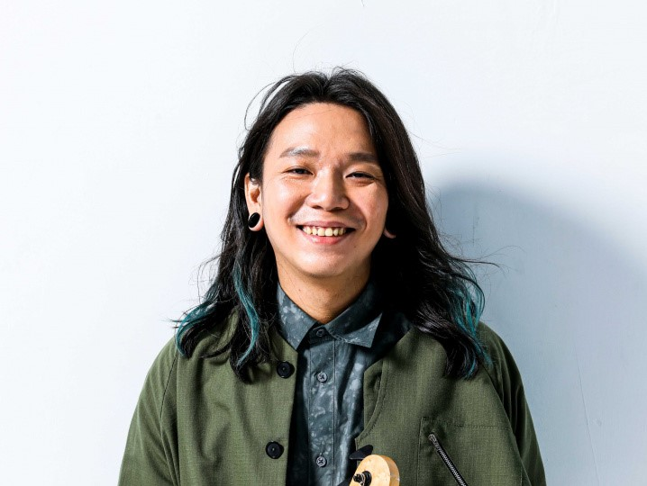

主唱 : 吳聖皓
- 1989年12月25日（31歲），出生於高雄市
- 目前就讀於文化大學音樂學系碩士班
- 主要作詞作曲
電吉他手 : 余柏羲 / 小B
- 1989年5月16日（32歲，出生於台南市
- 目前就讀於文化大學美術系碩士班
- 擅長編曲
木吉他手 : 林喆安
- 1989年12月14日（31歲），出生於高雄市
- 目前就讀於文化大學音樂學系碩士班
- 擅長作曲

鼓手 : 盧逸凡
- 1988年11月16日（33歲），出生於屏東縣
- 畢業於高雄醫學大學生物科技學系
- PAISTE 銅鈸代言人
- VIC FIRTH 鼓棒代言人
- TAMA 爵士鼓代言人

Bass手 : 張以諾
- 1990年3月18日（31歲），出生於嘉義市
- 目前就讀於東海大學哲學系博士班
- WARWICK 電貝斯代言人